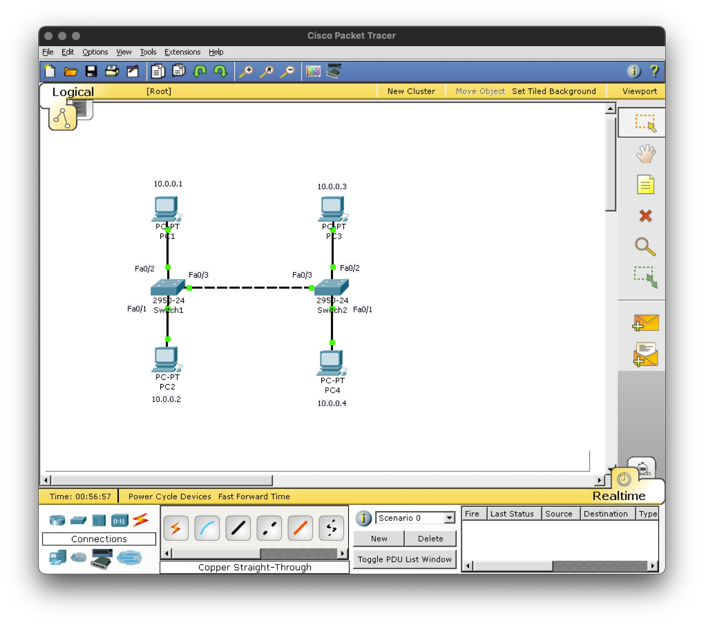
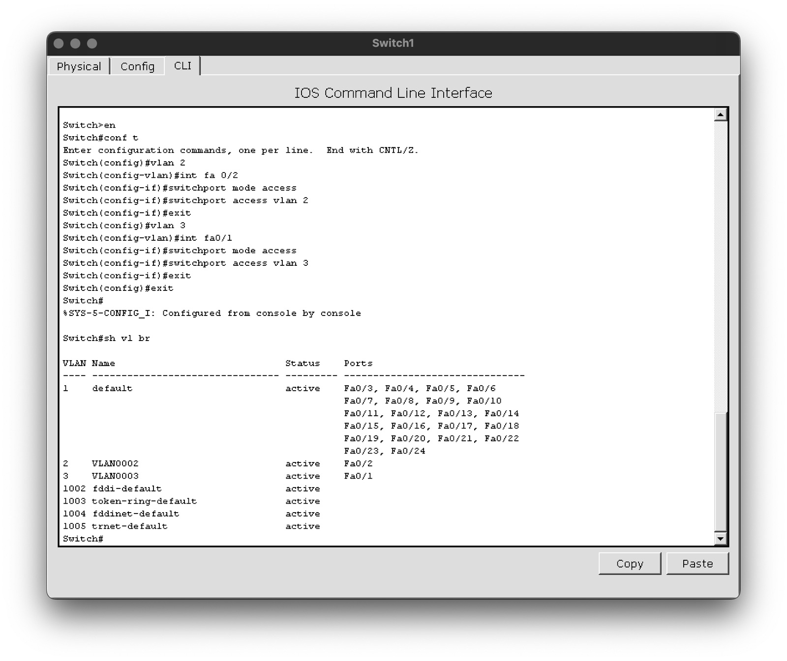
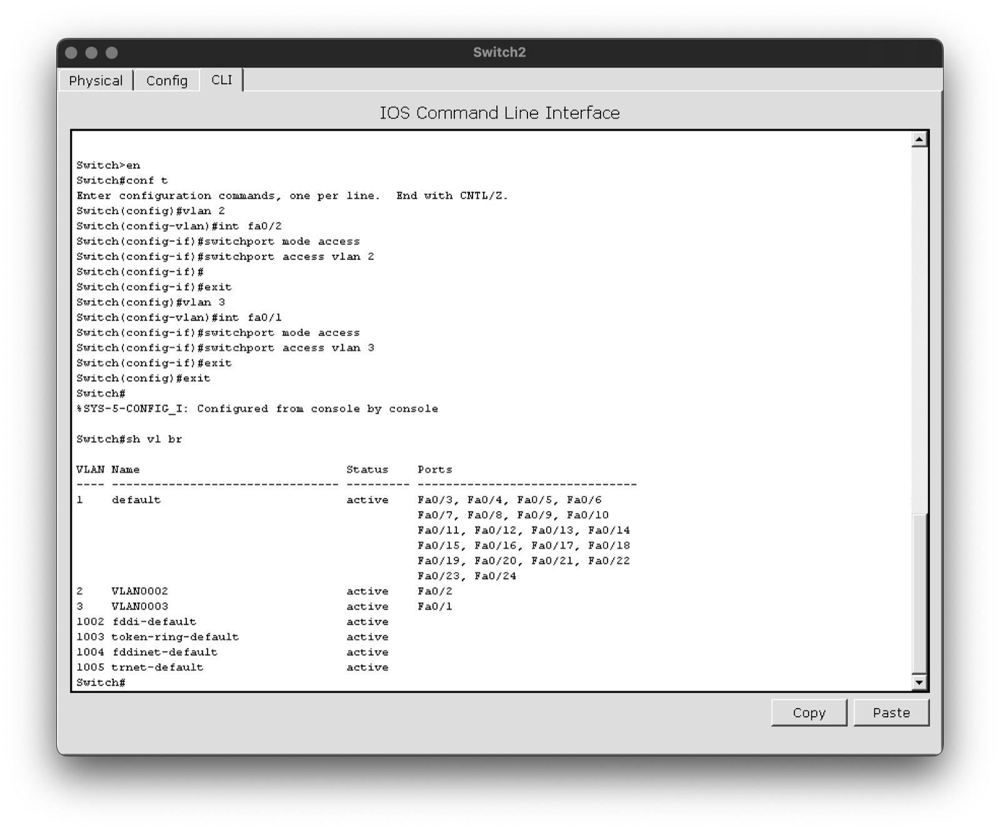
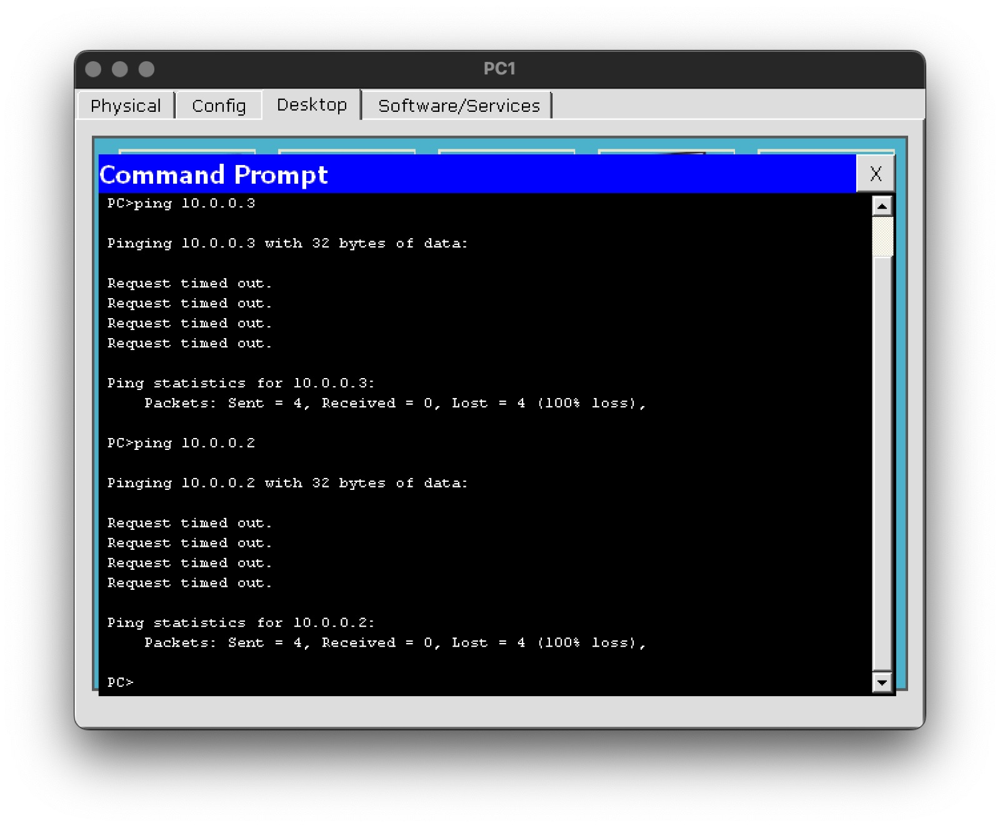
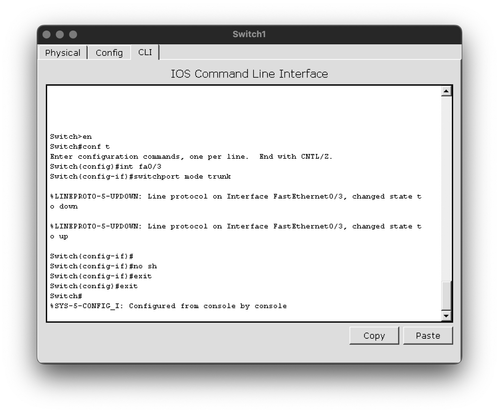
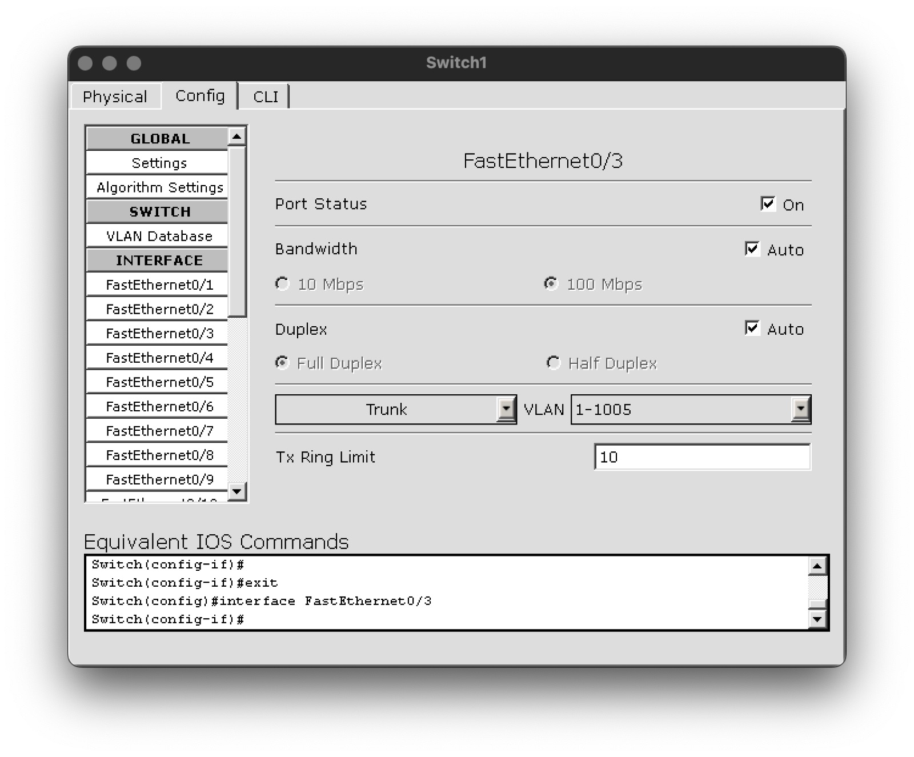
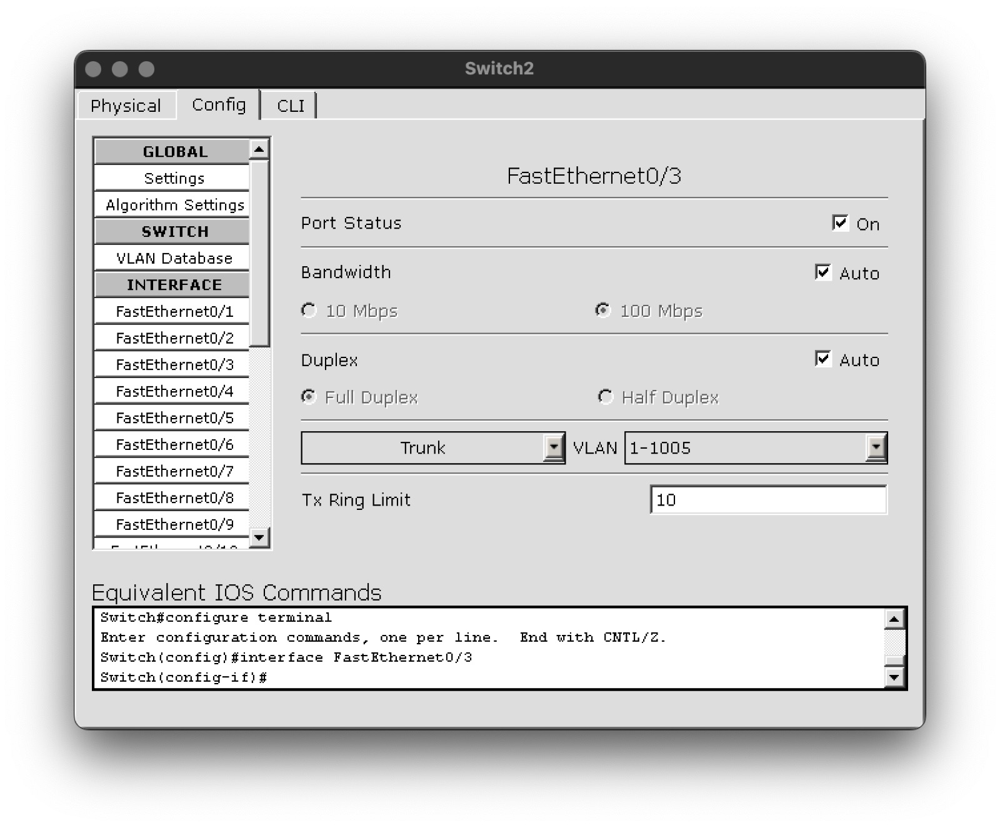
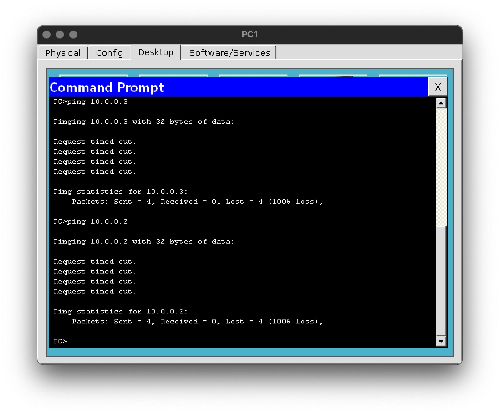

From network hardware and TCP/IP to designing networks in Cisco Packet Tracer: an office LAN, wireless networks and a network project for a company. Screenshots below; full reports as PDF. Related: network security lab.







